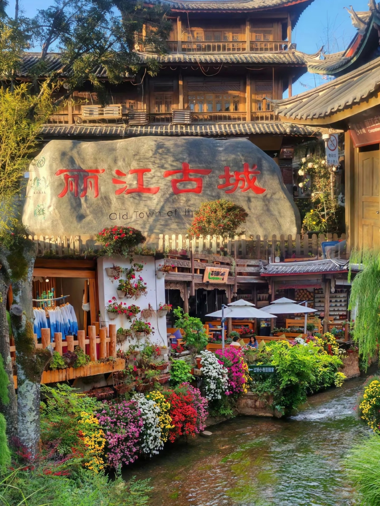
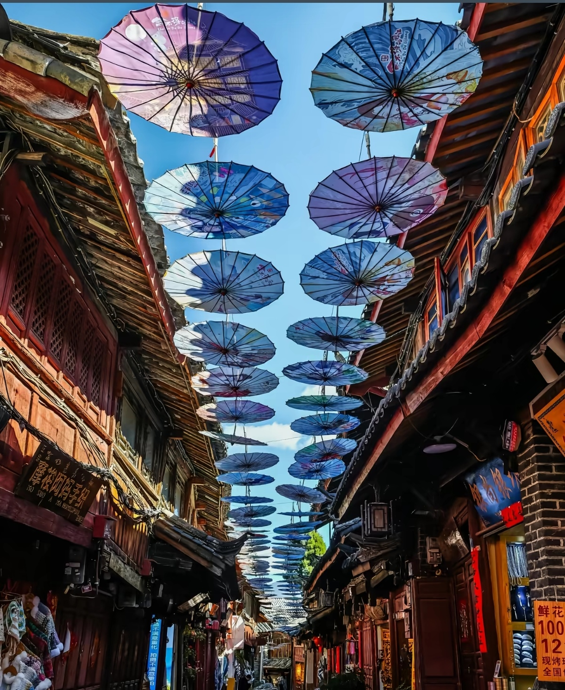
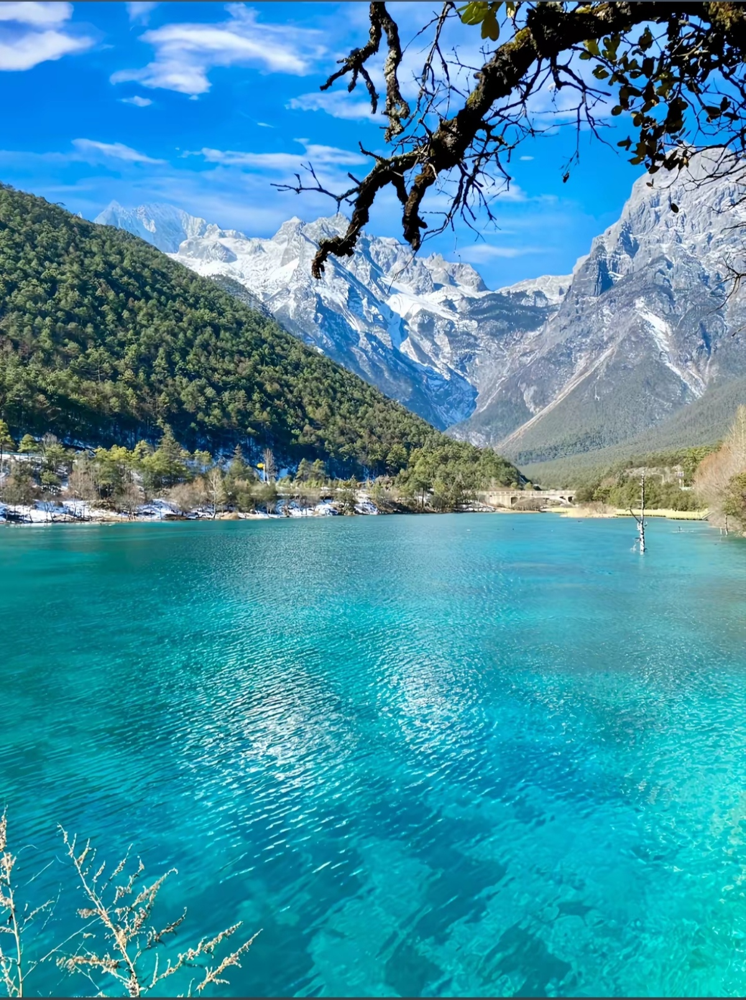
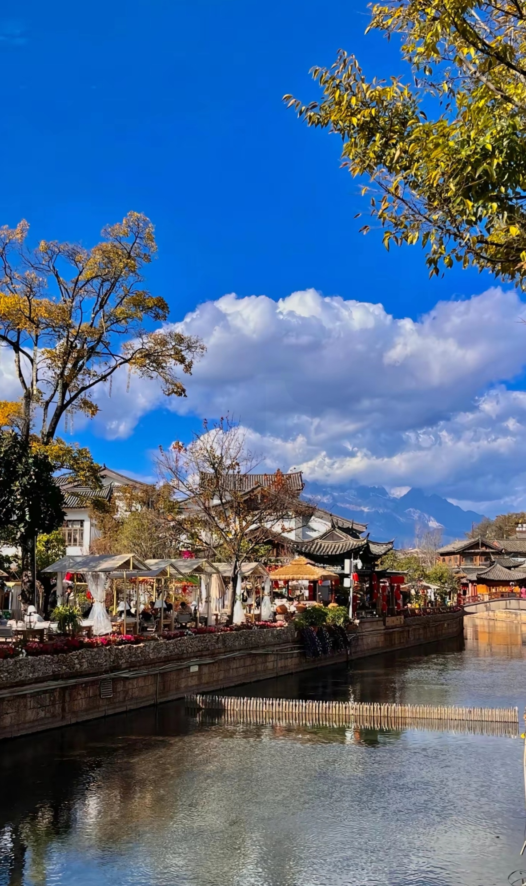
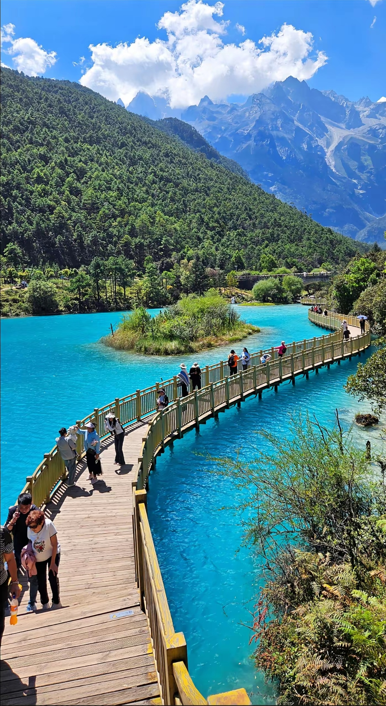

Lijiang Old Town is a UNESCO World Heritage Site nestled in the mountains of Yunnan Province. With over 800 years of history, it showcases the unique architecture and culture of the Naxi people. The town's cobblestone streets, ancient water channels, and ornate wooden buildings create a fairy-tale atmosphere. Surrounded by snow-capped mountains and lush valleys, Lijiang has been a major trading post on the ancient Tea Horse Road for centuries.





Lijiang Sanyi Airport: Flights from Kunming (1h, ¥400), Chengdu (1.5h, ¥600), Beijing (3.5h, ¥1200). Airport to Old Town: taxi ¥80-100, bus ¥20.
From Kunming: High-speed train (3.5h, ¥220). From Chengdu: Overnight train (10h, ¥250 sleeper). Lijiang Station is 30 min from Old Town by taxi (¥30).
From Kunming: Long-distance bus (8-10h, ¥200). From Dali: Bus (3h, ¥80). Buses arrive at Lijiang Bus Station, walk or take taxi to Old Town.
Walking only: No cars allowed inside Old Town. Luggage carts available. For Jade Dragon Snow Mountain: bus from town (¥15) or tour (¥200-300).
Route: South Gate → Sifang Street → Wooden Mansion → Wangu Tower → Black Dragon Pool
Duration: 3-4 hours
Best for: First-time visitors, culture lovers
Route: Old Town → Mountain bus → Cable car to 4,506m → Glacier Park → Blue Moon Valley → Return
Duration: 8-10 hours
Cost: ¥200-300 (tour with transport and entry)
Day 1: Old Town exploration
Day 2: Jade Dragon Snow Mountain
Day 3: Baisha Village or Shuhe Ancient Town
Activities: Naxi music performance, Dongba calligraphy class, Tea Horse Road museum, Local market visit
Duration: Full day
Location: Wuyi Street, Old Town
Specialty: Rice noodles, Grilled fish, Yak meat
Hours: 10:00 AM - 10:00 PM
Location: Near Wooden Mansion
Specialty: Eight-dish Naxi banquet, Local wine
Hours: 11:00 AM - 9:00 PM
Location: Xinhua Street
Specialty: Yunnan coffee, Cakes, Light meals
Hours: 8:00 AM - 10:00 PM
Location: Qiyi Street area
Specialty: Grilled fish, Skewers, Local snacks
Hours: 6:00 PM - 12:00 AM
Location: Inside Old Town
Features: Traditional Naxi style, Courtyard, Personal service
Note: Most authentic experience; book early for peak season
Location: Old Town edge
Features: Luxury, Spa, Mountain views, Modern amenities
Distance to Center: 5 min walk
Location: Various in Old Town
Features: Dorm beds, Social atmosphere, Travel info
Best for: Budget travelers, backpackers
Location: Lijiang New Town
Features: Modern, Parking, Larger rooms
Distance to Old Town: 10-15 min taxi (¥15-20)